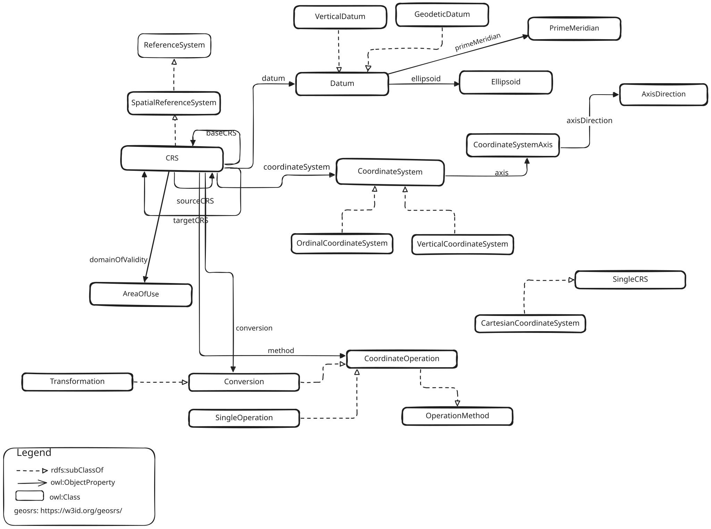
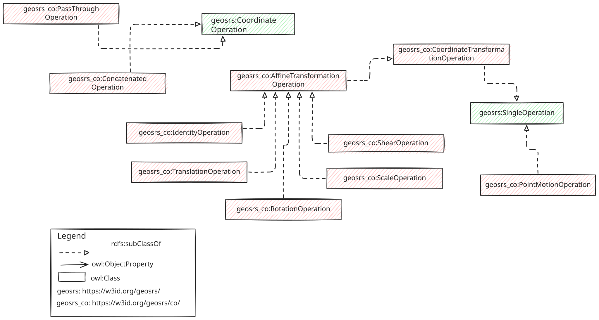
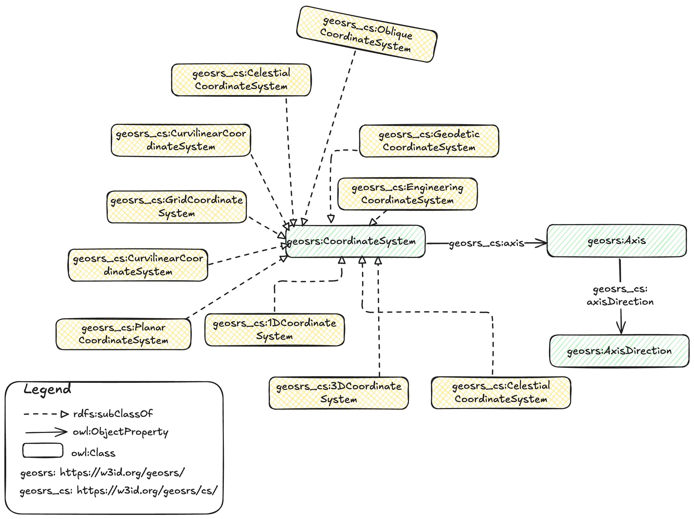
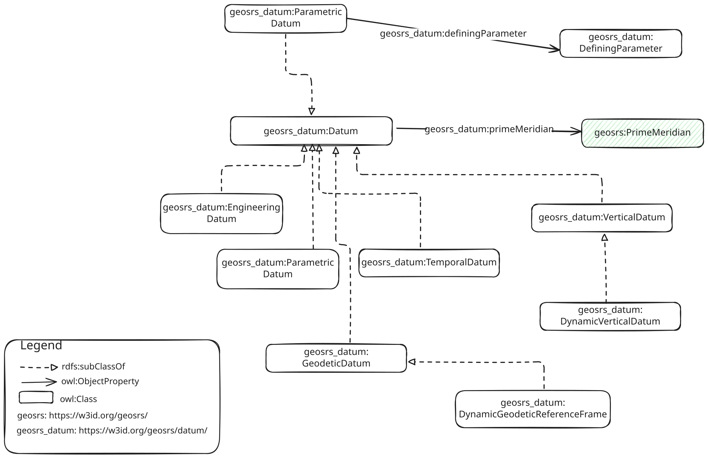
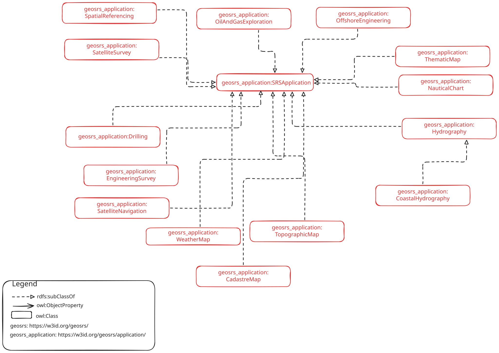
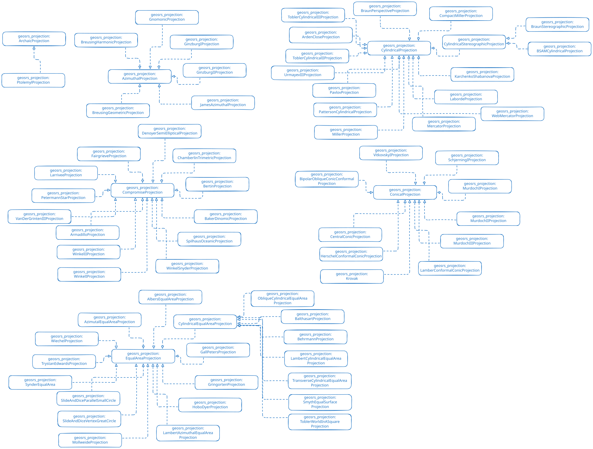
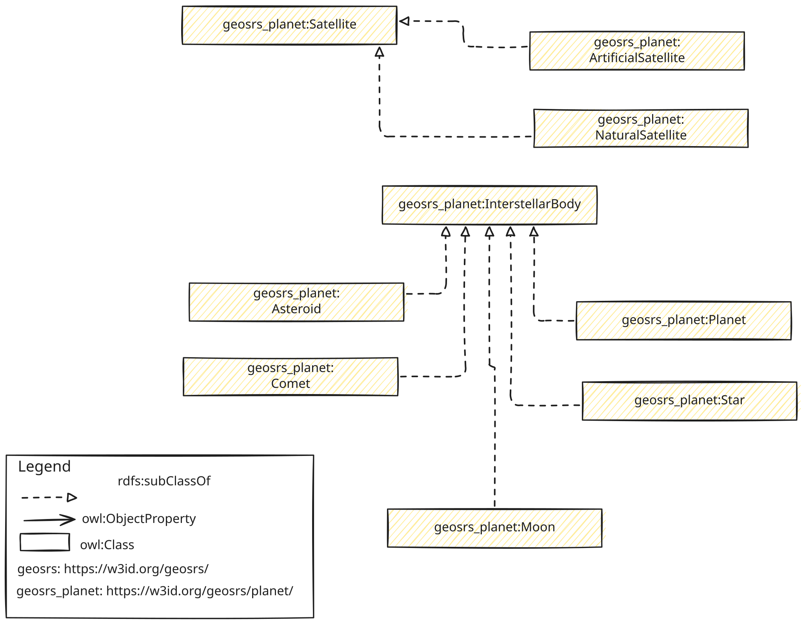

1. Scope
<Insert Scope text here>
This specification results from a joint effort between the Spatio-temporal Data on the Web Working Group (SDWWG) of the W3C and the GeoSemantics DWG of the OGC. It is meant to provide a workable Semantic Web counterpart to the ISO 19111 domain model, in order to represent coordinate reference systems (CRS) with the Resource Description Framework (RDF).
The CRS web ontology is meant to support all kinds of data that use numerical spatial coordinates, in one, two or three spatial dimensions. It should be applicable irrespective of location, scale or datum. It may comprise coordinates relative to the Earth, Mars, the solar system, an archaeological site, a book page, or a computer screen.
This specification is complementary to GeoSPARQL, arguably the most important standard for spatial data on the Web. GeoSPARQL offers a paradigm to encode and exchange geometries, but it does not include CRS semantics, thus consigning such information to literals.
Formal CRS semantics lends GeoSPARQL means to declare and exchange reference systems with precision. It also facilitates the wholesale assignment of CRS information to collections of geometries, and other kinds of literals, abridging redundancies. Moreover, a CRS ontology paves the way for a web-based CRS catalogue, providing a persistent reference to any geospatial software.
NOTE Give the subject of the document and the aspects of that scope covered by the document.
2. Conformance
This standard defines the following requirements classes and their associated conformance classes. Conformance with this standard shall be checked using the tests specified in Annex A (normative).
| Conformance class | Standardization target | URI |
|---|---|---|
| SRS Core Ontology | https://opengeospatial.github.io/ontology-crs/conf/core | |
| SRS Ontology - Coordinate Operation module | https://opengeospatial.github.io/ontology-crs/conf/co | |
| SRS Ontology - Coordinate System module | https://opengeospatial.github.io/ontology-crs/conf/cs | |
| SRS Ontology - Datum module | https://opengeospatial.github.io/ontology-crs/conf/datum | |
| SRS Ontology - Application module | https://opengeospatial.github.io/ontology-crs/conf/srsapplication | |
| SRS Ontology - Projection module | https://opengeospatial.github.io/ontology-crs/conf/projections | |
| SRS Ontology - Planet module | https://opengeospatial.github.io/ontology-crs/conf/planet | |
| Common Instances | RDF vocabulary | https://opengeospatial.github.io/ontology-crs/conf/instances |
3. Normative References
Bibliography
4. Terms and Definitions
Abbreviated Terms
| CRS | coordinate reference system |
| SRS | spatial reference system |
5. Conventions
NOTE This section provides details and examples for any conventions used in the document. Examples of conventions are symbols, abbreviations, use of XML schema, or special notes regarding how to read the document.
Identifiers
The normative provisions in this standard are denoted by the URI
https://opengeospatial.github.io/ontology-crs
All requirements and conformance tests that appear in this document are denoted by partial URIs which are relative to this base.
Namespaces
The suggested prefix for the namespace of the core terms, https://w3id.org/geosrs/, is geosrs. Each module defines its terms under its own namespace, https://w3id.org/geosrs/<module>/, with the suggested prefix geosrs_<module>.
Other conventions
<Place any other convention needed with its corresponding title>
6. SRS Core Ontology
Requirements Class
| Requirements class | https://opengeospatial.github.io/ontology-crs/req/core |
|---|---|
| Conformance class | https://opengeospatial.github.io/ontology-crs/conf/core |
| Standardization target |
SRS Ontology Core Module
This module describes how to use the SRS ontology core vocabulary.
Classes and properties are described under the namespace https://w3id.org/geosrs/srs/

The Core module establishes a set of classes and properties which define the building blocks of a spatial reference system definition. Some of the definitions are extended in specialized modules related to the Core module.
From a base class SpatialReferenceSystem, a class for a coordinate reference system is subtyped. CoordinateReferenceSystem is the superclass of all spatial reference systems describing locations using coordinates. The latter are described using a Datum and a CoordinateSystem definition with at least one instance of CoordinateAxis. Together with several subtypes of CoordinateReferenceSystem, these definitions complete the Core module.
Requirements
Implementations SHALL allow the RDFS classes geosrs:AreaOfUse, geosrs:AxesList, geosrs:Extent, geosrs:GeographicBoundingBox and geosrs:SingleCRSList to be used in SPARQL graph patterns.
| Class | Subclass of | Definition |
|---|---|---|
geosrs_srs:AreaOfUseArea of use |
ns1:Feature |
Area within which a coordinate operation may be used. |
geosrs_srs:AxesListAxes List |
Ordered list of coordinate system axes. | |
geosrs_srs:ExtentExtent |
Geographic area or time interval in which the referring object is valid. Cf. ISO 19115-1:2014:2014-04, part 6.6.1 and table B.15 line 335. | |
geosrs_srs:GeographicBoundingBoxGeographic Bounding Box |
Frame delimiting an area of interest. See ISO 19115-1:2014:2014-04, part 6.6.1 and table B.15.1 line 344. | |
geosrs_srs:SingleCRSListSingle CRS List |
Ordered list of simple reference coordinate systems. |
Implementations SHALL allow the RDFS properties geosrs:EPSGcode, geosrs:asProj4, geosrs:asProjJSON, geosrs:asWKT, geosrs:baseCRS, geosrs:conversion, geosrs:coordinateSystem, geosrs:datum, geosrs:datumEnsemble, geosrs:domainOfValidity and geosrs:method to be used in SPARQL graph patterns.
| Property | Domain | Range | Definition |
|---|---|---|---|
geosrs:asProj4PROJ4 string |
geosrs_srs:CRS |
geosrs_srs:proj4Literal |
PROJ4 string defining a CRS. Note: this paradigm is ambiguous and presently considered outdated. |
geosrs:asProjJSONPROJ JSON definition |
geosrs_srs:CRS |
geosrs_srs:projJSONLiteral |
CRS definition encoded as a JSON object interpretable by PROJ4. |
geosrs:asWKTWKT definition |
geosrs_srs:CRS |
geosrs_srs:wktLiteral |
CRS definition encoded according to the Well Known Text structure. Cf. ISO 19162:2019. |
geosrs:baseCRSBase CRS |
geosrs_srs:ProjectedCRS |
geosrs_srs:GeodeticCRS |
The geodetic coordinate reference system on which a projected coordinate reference system is based. Cf. ISO 19111:2007:2007-07, table 11, association role baseCRS. |
geosrs:conversionDefined by conversion |
geosrs_srs:CRS |
geosrs:Conversion |
The conversion used to define a projected coordinate reference system. Cf. ISO 19111:2007:2007-07, table 7, named association Definition. |
geosrs:coordinateSystemCoordinate system |
geosrs_srs:CRS |
geosrs:CoordinateSystem |
The property relates a coordinate reference system to its coordinate system |
geosrs:datumDatum |
geosrs_srs:CRS |
geosrs:Datum |
The property relates a coordinate reference system to a datum |
geosrs:datumEnsembleDatum Ensemble |
geosrs_srs:SingleCRS |
ns2:DatumEnsemble |
Indicates a single CRS referring to a collection of one or more datums (Datum Ensemble) |
geosrs:domainOfValidityDomain of validity |
geosrs_srs:CRS |
geosrs_srs:AreaOfUse |
Geographic area or time interval in which the referring object is valid. Cf. ISO 19111:2007:2007-07, tables 4, 33 and 42, attribute domainOfValidity. |
geosrs:EPSGcodeEPSG code |
ns3:string |
Identifier of this resource in the EPSG Geodetic Parameter Dataset. | |
geosrs:methodMethod |
geosrs_srs:CRS |
geosrs:CoordinateOperation |
Implementations SHALL allow the RDFS classes geosrs:BoundCRS, geosrs:CRS, geosrs:CompoundCRS, geosrs:EngineeringCRS, geosrs:GeocentricCRS, geosrs:GeodeticCRS, geosrs:GeographicCRS, geosrs:ParametricCRS, geosrs:ProjectedCRS, geosrs:ReferenceSystem, geosrs:SelenographicCRS, geosrs:SingleCRS, geosrs:SpatialReferenceSystem, geosrs:SpatioParametricCompoundCRS, geosrs:SpatioParametricTemporalCompoundCRS, geosrs:SpatioTemporalCompoundCRS, geosrs:StaticCRS, geosrs:TemporalCRS and geosrs:VerticalCRS to be used in SPARQL graph patterns.
| Class | Subclass of | Definition |
|---|---|---|
geosrs_srs:BoundCRSBound Coordinate Reference System |
geosrs_srs:CRS |
|
geosrs_srs:CompoundCRSCompound Coordinate Reference System |
geosrs_srs:CRS |
Coordinate reference system using at least two independent single coordinate reference systems. Cf. ISO 19111:2007:2007-07, parts 8.2.3.c, 8.2.4, table 6 and annex B.1.2.4. |
geosrs_srs:CRSCoordinate Reference System |
geosrs_srs:SpatialReferenceSystem |
Depending on the spatial dimension of coordinates (1D, 2D, 3D), this piece of metadata is used for specifying the elements of definition associated to a given set of coordinates: its datum, its ellipsoid, its prime meridian, the type of coordinates (geocentric, geographic, projected,...), the coordinates units of measure, when appropriate the cartographic projection used, the vertical coordinate reference system. |
geosrs_srs:EngineeringCRSEngineering Coordinate Reference System |
geosrs_srs:CRS |
A contextually local coordinate reference system which can be divided into two broad categories: - earth-fixed systems applied to engineering activities on or near the surface of the earth; - CRSs on moving platforms such as road vehicles, vessels, aircraft or spacecraft. |
geosrs_srs:GeocentricCRSGeocentric Coordinate Reference System |
geosrs_srs:CRS |
A cartesian coordinate reference system that represents locations in the vicinity of the Earth (including its surface, interior, atmosphere, and surrounding outer space) as X, Y, and Z measurements from its center of mass. Commonly used to track the orbits of satellites. |
geosrs_srs:GeodeticCRSGeodetic Coordinate Reference System |
geosrs_srs:CRS |
Coordinate Reference System associated with a geodetic datum. Cf. ISO 19111:2007:2007-07, part 8.2.2.a, table 10 and annex B.1.2.1.a. |
geosrs_srs:GeographicCRSGeographic Coordinate Reference System |
geosrs_srs:CRS |
Coordinate Reference System that has a geodetic reference frame and an ellipsoidal coordinate system |
geosrs_srs:ParametricCRSParametric Coordinate Reference System |
geosrs_srs:CRS |
Coordinate Reference System based on a parametric datum |
geosrs_srs:ProjectedCRSProjected Coordinate Reference System |
geosrs_srs:CRS |
Coordinate Reference System derived from a two-dimensional geodetic coordinate reference system by applying a map projection. Cf. ISO 19111:2007:2007-07, part 8.2.3.b, table 11 and annex B.1.2.3. |
geosrs_srs:ReferenceSystemReference System |
An abstract coordinate system, whose origin, orientation and scale are specified in physical space. It is based on a set of reference points, defined as geometric points whose position is identified physically and mathematically. | |
geosrs_srs:SelenographicCRSSelenographic CRS |
geosrs_srs:CRS |
Coordinate Reference System to refer locations on the surface of the Earth’s Moon. |
geosrs_srs:SingleCRSSingle Coordinate Reference System |
geosrs_srs:CRS |
Coordinate reference system consisting of one coordinate system and one datum. Cf. ISO 19111:2007:2007-07, table 5. |
geosrs_srs:SpatialReferenceSystemSpatial Reference System |
geosrs_srs:ReferenceSystem |
A spatial reference system (SRS) is a system for establishing spatial position. A spatial reference system can use geographic identifiers (place names, for example), coordinates (in which case it is a coordinate reference system), or identifiers with structured geometry (in which case it is a discrete global grid system). |
geosrs_srs:SpatioParametricCompoundCRSSpatio Parametric Compound Coordinate Reference System |
geosrs_srs:CompoundCRS |
A spatio-parametric coordinate reference system is a compound CRS in which one component is a geographic 2D, projected 2D or engineering 2D CRS, supplemented by a parametric CRS to create a three-dimensional CRS |
geosrs_srs:SpatioParametricTemporalCompoundCRSSpatio-Parametric Temporal Compound Coordinate Reference System |
geosrs_srs:SpatioParametricCompoundCRS |
Coordinate reference system combining a spatio-parametric reference system with at least one temporal reference system |
geosrs_srs:SpatioTemporalCompoundCRSSpatio-Parametric Compound Coordinate Reference System |
geosrs_srs:CompoundCRS |
Coordinate reference system combining a spatial reference system with at least one temporal reference system |
geosrs_srs:StaticCRSStatic CRS |
geosrs_srs:CRS |
Coordinate Reference System that has a static reference frame |
geosrs_srs:TemporalCRSTemporal CRS |
geosrs_srs:CRS |
Coordinate Reference System based on a temporal datum |
geosrs_srs:VerticalCRSVertical CRS |
geosrs_srs:CRS |
One-dimensional coordinate reference system associated with a vertical datum and used for recording heights or depths.Ellipsoidal heights are not captured in a vertical coordinate reference system but as part of a 3D coordinates tuple defined in a geodetic 3D coordinate reference system. Cf. ISO 19111:2007:2007-07, parts 8.2.2.b, table 14 and annex B.1.2.1.b. |
Examples
SRS Ontology Code Module Example
@prefix rdf: <http://www.w3.org/1999/02/22-rdf-syntax-ns#> .
@prefix rdfs: <http://www.w3.org/2000/01/rdf-schema#> .
@prefix geosrs:<https://w3id.org/geosrs/srs#> .
@prefix exsrs: <https://w3id.org/example-data-srs#> .
<http://www.opengis.net/def/crs/EPSG/0/23032> rdf:type geosrs:ProjectedCRS ;
rdfs:label "ED50 / UTM zone 32N"@en ;
geosrs:asProj4 "+proj=utm +zone=32 +ellps=intl +units=m +no_defs +type=crs"^^geosrs:proj4Literal ;
geosrs:asProjJSON "{'$schema':'https://proj.org/schemas/v0.7/projjson.schema.json','type':'ProjectedCRS','name':'ED50 / UTM zone 32N','base_crs':{'name':'ED50','datum':{'type':'GeodeticReferenceFrame','name':'European Datum 1950','ellipsoid':{'name':'International 1924','semi_major_axis':6378388,'inverse_flattening':297}},'coordinate_system':{'subtype':'ellipsoidal','axis':[{'name':'Geodetic latitude','abbreviation':'Lat','direction':'north','unit':'degree'},{'name':'Geodetic longitude','abbreviation':'Lon','direction':'east','unit':'degree'}]},'id':{'authority':'EPSG','code':4230}},'conversion':{'name':'UTM zone 32N','method':{'name':'Transverse Mercator','id':{'authority':'EPSG','code':9807}},'parameters':[{'name':'Latitude of natural origin','value':0,'unit':'degree','id':{'authority':'EPSG','code':8801}},{'name':'Longitude of natural origin','value':9,'unit':'degree','id':{'authority':'EPSG','code':8802}},{'name':'Scale factor at natural origin','value':0.9996,'unit':'unity','id':{'authority':'EPSG','code':8805}},{'name':'False easting','value':500000,'unit':'metre','id':{'authority':'EPSG','code':8806}},{'name':'False northing','value':0,'unit':'metre','id':{'authority':'EPSG','code':8807}}]},'coordinate_system':{'subtype':'Cartesian','axis':[{'name':'Easting','abbreviation':'E','direction':'east','unit':'metre'},{'name':'Northing','abbreviation':'N','direction':'north','unit':'metre'}]},'scope':'Engineering survey, topographic mapping.','area':'Europe - between 6°E and 12°E - Denmark - onshore and offshore; France - offshore; Germany offshore; Italy - onshore and offshore; Netherlands offshore; Norway including Svalbard - onshore and offshore.','bbox':{'south_latitude':36.53,'west_longitude':6,'north_latitude':84.33,'east_longitude':12},'id':{'authority':'EPSG','code':23032}}"^^geosrs:projJSONLiteral ;
geosrs:asWKT "PROJCRS['ED50 / UTM zone 32N',BASEGEOGCRS['ED50',DATUM['European Datum 1950',ELLIPSOID['International 1924',6378388,297,LENGTHUNIT['metre',1]]],PRIMEM['Greenwich',0,ANGLEUNIT['degree',0.0174532925199433]],ID['EPSG',4230]],CONVERSION['UTM zone 32N',METHOD['Transverse Mercator',ID['EPSG',9807]],PARAMETER['Latitude of natural origin',0,ANGLEUNIT['degree',0.0174532925199433],ID['EPSG',8801]],PARAMETER['Longitude of natural origin',9,ANGLEUNIT['degree',0.0174532925199433],ID['EPSG',8802]],PARAMETER['Scale factor at natural origin',0.9996,SCALEUNIT['unity',1],ID['EPSG',8805]],PARAMETER['False easting',500000,LENGTHUNIT['metre',1],ID['EPSG',8806]],PARAMETER['False northing',0,LENGTHUNIT['metre',1],ID['EPSG',8807]]],CS[Cartesian,2],AXIS['(E)',east,ORDER[1],LENGTHUNIT['metre',1]],AXIS['(N)',north,ORDER[2],LENGTHUNIT['metre',1]],USAGE[SCOPE['Engineering survey, topographic mapping.'],AREA['Europe - between 6°E and 12°E - Denmark - onshore and offshore; France - offshore; Germany offshore; Italy - onshore and offshore; Netherlands offshore; Norway including Svalbard - onshore and offshore.'],BBOX[36.53,6,84.33,12]],ID['EPSG',23032]]"^^geosrs:wktLiteral ;
geosrs:coordinateOperation <http://www.opengis.net/ont/crs/operation/UTM_zone_32N> ;
geosrs:coordinateSystem <http://www.opengis.net/def/crs/EPSG/0/23032_cs> ;
geosrs:datum <http://www.opengis.net/ont/crs/datum/European_Datum_1950> ;
geosrs:domainOfValidity <http://www.opengis.net/def/crs/EPSG/0/23032_area_of_use> ;
geosrs:isApplicableTo <http://www.opengis.net/ont/crs/isbody/Earth> ;
geosrs:sourceCRS <http://www.opengis.net/def/crs/EPSG/0/4230> .
7. SRS Ontology - Coordinate Operation module
Requirements Class
| Requirements class | https://opengeospatial.github.io/ontology-crs/req/co |
|---|---|
| Conformance class | https://opengeospatial.github.io/ontology-crs/conf/co |
| Standardization target |
SRS Ontology Coordinate Operation Module
This module describes how to model a coordinate operation using the SRS ontology vocabulary.
Coordinate Operation classes and properties are described under the namespace https://w3id.org/geosrs/co/

Coordinate operations are mathematical methods that transform coordinates from one reference system to another. There are three main families: geosrs:PassThroughOperation, geosrs:ConcatenatedOperation, geosrs:SingleOperation, with only the latter featuring in the Core module. A concatenated operation is a sequence of single operations, all applied on the same reference system. In contrast, a single operation is a non-concatenated method, transforming coordinates in a single step. geosrs:PassThroughOperation narrows down the operation to a sub-set of the coordinates tuple.
The geosrs:SingleOperation specialises further into three sub-types: geosrs:PointMotion, geosrs:Transformation and geosrs:Conversion. Except for geosrs:PointMotion all of these classes are included in the Core module. A Conversion operation translates coordinates between two reference systems defined on the same datum. In its turn, a Transformation translates coordinates between reference systems defined on different datums. A conversion tends to be a direct mathematical function with no uncertainty associated. A transformation is often defined on non-finite methods and implies a relevant uncertainty in its result. A point motion represents a change of coordinates values within the same coordinate system but between different time epochs. Point motions are usually caused by tectonic movements.
Within the Coordinate Operation module the geosrs:Transformation operation is further specialised by the geosrs:AffineTransformation class. The latter is further specialised with narrower operations: geosrs:Scale, geosrs:Rotation, geosrs:Identity, geosrs:Shear and geosrs:Translation.
Requirements
Implementations SHALL allow the RDFS classes geosrs:AffineOperation, geosrs:GeographicObject, geosrs:IdentityOperation, geosrs:RegisterOperations, geosrs:RotationOperation, geosrs:ScaleOperation, geosrs:ShearOperation and geosrs:TranslationOperation to be used in SPARQL graph patterns.
| Class | Subclass of | Definition |
|---|---|---|
geosrs_co:AffineOperationAffine Operation |
geosrs:Conversion |
A linear (or first-order) operation relating two 2D Cartesian coordinate systems through a rotation, a scale change in xx and yy directions, followed by a translation. It can be expressed as a function with 6 parameters: one rotation angle (a), two scale factors, a scale factor in the xx-direction (sx) and a scale factor in the yy-direction (sy), and two origin shifts (xo, yo). |
geosrs_co:GeographicObjectGeographic Object |
ns1:Geometry |
Identifier of a geographic feature of which the coordinates are used as operation parameters. |
geosrs_co:IdentityOperationIdentity Operation |
geosrs:AffineTransformationOperation |
Identity transformation operation |
geosrs_co:RegisterOperationsRegister Operations |
Operations supported in the Coordinate Operations package. | |
geosrs_co:RotationOperationRotation Operation |
geosrs:AffineTransformationOperation |
Rotation transformation operation |
geosrs_co:ScaleOperationScale Operation |
geosrs:AffineTransformationOperation |
Scale transformation operation |
geosrs_co:ShearOperationShear Operation |
geosrs:AffineTransformationOperation |
Shear transformation operation |
geosrs_co:TranslationOperationTranslation Operation |
geosrs:AffineTransformationOperation |
Translation transformation operation |
Implementations SHALL allow the RDFS classes geosrs:ConcatenatedOperation, geosrs:Conversion, geosrs:CoordinateOperation, geosrs:OperationMethod, geosrs:PassThroughOperation, geosrs:PointMotionOperation, geosrs:SingleOperation and geosrs:Transformation to be used in SPARQL graph patterns.
| Class | Subclass of | Definition |
|---|---|---|
geosrs_co:ConcatenatedOperationConcatenated Operation |
geosrs:CoordinateOperation |
Ordered sequence of two or more single coordinate operations. Note: The sequence of coordinate operations is constrained by the requirement that the source coordinate reference system of step (n + 1) shall be the same as the target coordinate reference system of step (n). The source coordinate reference system of the first step and the target coordinate reference system of the last step are the source and target coordinate reference system associated with the concatenated coordinate operation. For a concatenated coordinate operation sequence of n coordinate operations: source CRS (concatenated coordinate operation) .eq. source CRS (coordinate operation step 1) target CRS (coordinate operation step i) .eq. source CRS (coordinate operation step i + 1); i .eq. 1 ...(n - 1) target CRS (concatenated coordinate operation) .eq. target CRS (coordinate operation step n) Instead of a forward coordinate operation, an inverse coordinate operation may be used for one or more of the coordinate operation steps mentioned above, if the inverse coordinate operation is uniquely defined by the forward coordinate operation method. |
geosrs_co:PassThroughOperationPass Through Operation |
geosrs:CoordinateOperation |
A pass-through coordinate operation specifies that a subset of a coordinate tuple is subject to a specific coordinate operation. |
geosrs_co:PointMotionOperationPoint Motion Operation |
geosrs:SingleOperation |
Mathematical operation that decribes the change of coordinate values within one coordinate reference system due to the motion of the point between one coordinate epoch and another coordinate epoch Note: In this document the motion is due to tectonic plate movement or deformation. |
Implementations SHALL allow the RDFS classes geosrs:GeneralOperationParameter, geosrs:GeneralParameterValue, geosrs:OperationParameter, geosrs:OperationParameterGroup, geosrs:OperationParameterValue and geosrs:ParameterValueGroup to be used in SPARQL graph patterns.
| Class | Subclass of | Definition |
|---|---|---|
geosrs_co:OperationParameterGroupOperation Parameter Group |
geosrs:GeneralOperationParameter |
Definition of a group of related parameters used by a coordinate operation method. |
geosrs_co:ParameterValueGroupParameter Value Group |
geosrs:GeneralParameterValue |
Group of related parameter values. Note: The same group can be repeated more than once in a coordinate operation or higher level ParameterValueGroup, if those instances contain different values of one or more ParameterValues which suitably distinguish among those groups. |
Implementations SHALL allow the RDFS properties geosrs:derivingConversion, geosrs:parameter, geosrs:sourceCRS and geosrs:targetCRS to be used in SPARQL graph patterns.
| Property | Domain | Range | Definition |
|---|---|---|---|
geosrs_co:derivingConversionDeriving conversion |
geosrs:DerivedCRS |
geosrs:Conversion |
Relates a derived CRS to a conversion |
geosrs_co:parameterParameter |
geosrs:Conversion |
geosrs:OperationParameter |
Value of the datum-defining parameter |
geosrs_co:sourceCRSSource CRS |
geosrs:CoordinateOperation |
ns2:CRS |
The coordinate reference system associated to the data used as input of a given operation. Cf. ISO 19111:2007:2007-07, table 42, named association Source. |
geosrs_co:targetCRSTarget CRS |
geosrs:CoordinateOperation |
ns2:CRS |
The coordinate reference system associated to the data obtained as output of a given operation. Cf. ISO 19111:2007:2007-07, table 42, named association Target. |
Examples
SRS Ontology Coordinate Operation Module Example
@prefix rdf: <http://www.w3.org/1999/02/22-rdf-syntax-ns#> .
@prefix rdfs: <http://www.w3.org/2000/01/rdf-schema#> .
@prefix geosrs_co:<https://w3id.org/geosrs/co#> .
@prefix exsrs: <https://w3id.org/example-data-srs#> .
@prefix geo: <http://www.opengis.net/ont/geosparql#> .
@prefix geosrs: <https://w3id.org/geosrs/> .
@prefix rdfs: <http://www.w3.org/2000/01/rdf-schema#> .
@prefix xsd: <http://www.w3.org/2001/XMLSchema#> .
<http://www.opengis.net/ont/crs/operation/UTM_zone_32N> rdf:type geosrs_co:UniversalTransverseMercatorProjection ;
rdfs:label "UTM zone 32N: Transverse Mercator"@en ;
geosrs:area_of_use <http://www.opengis.net/ont/crs/areaofuse/UTM_zone_32N_area_of_use> ;
geosrs:asProj4 "+proj=pipeline +step +proj=axisswap +order=2,1 +step +proj=unitconvert +xy_in=deg +xy_out=rad +step +proj=utm +zone=32 +a=6378249.145 +rf=293.465",
"+proj=pipeline +step +proj=axisswap +order=2,1 +step +proj=unitconvert +xy_in=deg +xy_out=rad +step +proj=utm +zone=32 +ellps=GRS80",
"+proj=pipeline +step +proj=axisswap +order=2,1 +step +proj=unitconvert +xy_in=deg +xy_out=rad +step +proj=utm +zone=32 +ellps=GRS80 +step +proj=axisswap +order=2,1",
"+proj=pipeline +step +proj=axisswap +order=2,1 +step +proj=unitconvert +xy_in=deg +xy_out=rad +step +proj=utm +zone=32 +ellps=clrk80ign",
"+proj=pipeline +step +proj=axisswap +order=2,1 +step +proj=unitconvert +xy_in=deg +xy_out=rad +step +proj=utm +zone=32 +ellps=intl" ;
geosrs:asProjJSON "{'$schema':'https://proj.org/schemas/v0.7/projjson.schema.json','type':'Conversion','name':'UTM zone 32N','method':{'name':'Transverse Mercator','id':{'authority':'EPSG','code':9807}},'parameters':[{'name':'Latitude of natural origin','value':0,'unit':'degree','id':{'authority':'EPSG','code':8801}},{'name':'Longitude of natural origin','value':9,'unit':'degree','id':{'authority':'EPSG','code':8802}},{'name':'Scale factor at natural origin','value':0.9996,'unit':'unity','id':{'authority':'EPSG','code':8805}},{'name':'False easting','value':500000,'unit':'metre','id':{'authority':'EPSG','code':8806}},{'name':'False northing','value':0,'unit':'metre','id':{'authority':'EPSG','code':8807}}],'id':{'authority':'EPSG','code':16032}}" ;
geosrs:asWKT "CONVERSION['UTM zone 32N',METHOD['Transverse Mercator',ID['EPSG',9807]],PARAMETER['Latitude of natural origin',0,ANGLEUNIT['degree',0.0174532925199433],ID['EPSG',8801]],PARAMETER['Longitude of natural origin',9,ANGLEUNIT['degree',0.0174532925199433],ID['EPSG',8802]],PARAMETER['Scale factor at natural origin',0.9996,SCALEUNIT['unity',1],ID['EPSG',8805]],PARAMETER['False easting',500000,LENGTHUNIT['metre',1],ID['EPSG',8806]],PARAMETER['False northing',0,LENGTHUNIT['metre',1],ID['EPSG',8807]],ID['EPSG',16032]]"^^geosrs:wktLiteral .
8. SRS Ontology - Coordinate System module
Requirements Class
| Requirements class | https://opengeospatial.github.io/ontology-crs/req/cs |
|---|---|
| Conformance class | https://opengeospatial.github.io/ontology-crs/conf/cs |
| Standardization target |
SRS Ontology Coordinate System Module
This module describes how to model a coordinate system using the SRS ontology vocabulary.
Coordinate system classes and properties are described under the namespace https://w3id.org/geosrs/cs/

The coordinate system module introduces different types of coordinate systems which are distinguished in geospatial science and applications. Coordinate systems are distinguished by their area of use, i.e. planetary or interstellar, and by their dimensionality.
Requirements
Implementations SHALL allow the RDFS classes geosrs:ConicalCoordinateSystem, geosrs:CylindricalCoordinateSystem, geosrs:EllipsoidalCoordinateSystem and geosrs:SphericalCoordinateSystem to be used in SPARQL graph patterns.
| Class | Subclass of | Definition |
|---|---|---|
geosrs_cs:ConicalCoordinateSystemConical Coordinate System |
geosrs_cs:OrthogonalCoordinateSystem |
A conical coordinate system is a three-dimensional orthogonal coordinate system consisting of concentric spheres (described by their radius r) and by two families of perpendicular cones, aligned along the z- and x-axes, respectively |
geosrs_cs:CylindricalCoordinateSystemCylindrical Coordinate System |
geosrs:CoordinateSystem |
Three-dimensional coordinate system in Euclidean space in which position is specified by two linear coordinates and one angular coordinate |
geosrs_cs:EllipsoidalCoordinateSystemEllipsoidal Coordinate System |
geosrs_cs:OrthogonalCoordinateSystem |
Coordinate system which gives the position is specified by geodetic latitude, geodetic longitude and (in the three-dimensional case) ellipsoidal height. Cf. ISO 19111:2007:2007-07, tables 15 and 20. |
Implementations SHALL allow the RDFS classes geosrs:CelestialCoordinateSystem, geosrs:EclipticCoordinateSystem, geosrs:EquatorialCoordinateSystem, geosrs:GalacticCoordinateSystem, geosrs:HorizontalCoordinateSystem, geosrs:PerifocalCoordinateSystem and geosrs:SuperGalacticCS to be used in SPARQL graph patterns.
| Class | Subclass of | Definition |
|---|---|---|
geosrs_cs:CelestialCoordinateSystemCelestial Coordinate System |
geosrs:CoordinateSystem |
A coordinate system for specifying positions of celestial objects relative to physical reference points |
geosrs_cs:EclipticCoordinateSystemEcliptic Coordinate System |
geosrs_cs:CelestialCoordinateSystem |
An ecliptic coordinate system is used for representing the apparent positions and orbits of solar system objects. |
geosrs_cs:EquatorialCoordinateSystemEquatorial Coordinate System |
geosrs_cs:CelestialCoordinateSystem |
A celestial coordinate system in which an object's position on the celestial sphere is described in terms of its north-south declination and east-west right ascension, measured relative to the celestial equator and vernal equinox, respectively. |
geosrs_cs:GalacticCoordinateSystemGalactic Coordinate System |
geosrs_cs:CelestialCoordinateSystem |
A coordinate system with the Sun as its center, the primary direction aligned with the approximate center of the Milky Way Galaxy, and the fundamental plane parallel to an approximation of the galactic plane but offset to its north. |
geosrs_cs:HorizontalCoordinateSystemHorizontal Coordinate System |
geosrs_cs:CelestialCoordinateSystem |
A horizontal coordinate system is a celestial coordinate system that uses the observer's local horizon as the fundamental plane. |
geosrs_cs:PerifocalCoordinateSystemPerifocal Coordinate System |
geosrs_cs:CelestialCoordinateSystem |
A frame of reference centered at the focus of the orbit, i.e. the celestial body about which the orbit is centered. |
geosrs_cs:SuperGalacticCSSuper Galactic Coordinate System |
geosrs:3DCoordinateSystemgeosrs_cs:CelestialCoordinateSystem |
A reference frame for the supercluster of galaxies that contains the Milky Way galaxy, referenced to a local relatively flat collection of galaxy clusters used to define the supergalactic plane. |
Implementations SHALL allow the RDFS classes geosrs:CoordinateSystemAxis to be used in SPARQL graph patterns.
Implementations SHALL allow the RDFS properties geosrs:axis and geosrs:axisDirection to be used in SPARQL graph patterns.
| Property | Domain | Range | Definition |
|---|---|---|---|
geosrs_cs:axisAxis |
geosrs:CoordinateSystem |
geosrs:Axis |
The property relates a coordinate system to one of its axis |
geosrs_cs:axisDirectionAxis direction |
geosrs:Axis |
geosrs:AxisDirection |
The direction of an axis. Cf. ISO 19111:2007:2007-07, table 27, attribute coordinate system axis direction. |
Implementations SHALL allow the RDFS classes geosrs:AffineCoordinateSystem, geosrs:BarycentricCoordinateSystem, geosrs:CartesianCoordinateSystem, geosrs:CoordinateSystem, geosrs:CurvilinearCoordinateSystem, geosrs:EngineeringCoordinateSystem, geosrs:GeodeticCoordinateSystem, geosrs:GeographicalCoordinateSystem, geosrs:GridCoordinateSystem, geosrs:HexagonalCoordinateSystem, geosrs:LinearCoordinateSystem, geosrs:LocalCoordinateSystem, geosrs:ObliqueCoordinateSystem, geosrs:OrdinalCoordinateSystem, geosrs:OrthogonalCoordinateSystem, geosrs:ParametricCoordinateSystem, geosrs:PlanarCoordinateSystem, geosrs:PolarCoordinateSystem and geosrs:VerticalCoordinateSystem to be used in SPARQL graph patterns.
| Class | Subclass of | Definition |
|---|---|---|
geosrs_cs:AffineCoordinateSystemAffine Coordinate System |
geosrs:CoordinateSystem |
Coordinate system in Euclidean space with straight axes that are not necessarily mutually perpendicular |
geosrs_cs:BarycentricCoordinateSystemBarycentric Coordinate System |
geosrs:CoordinateSystem |
A coordinate system in which the location of a point is specified by reference to a simplex (a triangle for points in a plane, a tetrahedron for points in three-dimensional space, etc.) |
geosrs_cs:CurvilinearCoordinateSystemCurvilinear Coordinate System |
geosrs:CoordinateSystem |
A coordinate system for the Euclidean space in which the coordinate lines may be curved |
geosrs_cs:EngineeringCoordinateSystemEngineering Coordinate System |
geosrs:CoordinateSystem |
Coordinate system used by an engineering coordinate reference system, one of an affine coordinate system, a Cartesian coordinate system, a cylindrical coordinate system, a linear coordinate sytem, an ordinal coordinate system, a polar coordinate system or a spherical coordinate system |
geosrs_cs:GeodeticCoordinateSystemGeodetic Coordinate System |
geosrs:CoordinateSystem |
Coordinate system used by a Geodetic CRS, one of a Cartesian coordinate system or a spherical coordinate system. |
geosrs_cs:GeographicalCoordinateSystemGeographic Coordinate System |
geosrs:SphericalCoordinateSystemgeosrs_cs:GeodeticCoordinateSystem |
Spherical or geodetic coordinate system for measuring and communicating positions directly on Earth as latitude and longitude. |
geosrs_cs:GridCoordinateSystemGrid Coordinate System |
geosrs:CoordinateSystem |
A grid coordinate system identifies areas within a grid. |
geosrs_cs:HexagonalCoordinateSystemHexagonal Coordinate System |
geosrs_cs:GridCoordinateSystem |
A hexagonal coordinate system identifies areas within a hexagonal lattice. |
geosrs_cs:LocalCoordinateSystemLocal Coordinate System |
geosrs:CoordinateSystem |
Coordinate system with a point of local reference. |
geosrs_cs:ObliqueCoordinateSystemOblique Coordinate System |
geosrs:CoordinateSystem |
A plane coordinate system whose axes are not perpendicular. |
geosrs_cs:OrthogonalCoordinateSystemOrthogonal Coordinate System |
geosrs_cs:CurvilinearCoordinateSystem |
A orthogonal coordinate system is a system of curvilinear coordinates in which each family of surfaces intersects the others at right angles. |
geosrs_cs:ParametricCoordinateSystemParametric Coordinate System |
geosrs:CoordinateSystem |
One-dimensional coordinate system where the axis units are parameter values which are not inherently spatial. |
geosrs_cs:PlanarCoordinateSystemPlanar Coordinate System |
geosrs:CoordinateSystem |
A two-dimensional measurement system that locates features on a plane based on their distance from an origin (0,0) along two perpendicular axes. |
geosrs_cs:PolarCoordinateSystemPolar Coordinate System |
geosrs_cs:PlanarCoordinateSystem |
Two-dimensional coordinate system in Euclidean space in which position is specified by one distance coordinate and one angular coordinate. |
Implementations SHALL allow the RDFS classes geosrs:DateTimeTemporalCoordinateSystem, geosrs:TemporalCoordinateSystem, geosrs:TemporalCountCoordinateSystem and geosrs:TemporalMeasureCoordinateSystem to be used in SPARQL graph patterns.
| Class | Subclass of | Definition |
|---|---|---|
geosrs_cs:DateTimeTemporalCoordinateSystemDateTime Temporal Coordinate System |
geosrs_cs:TemporalCoordinateSystem |
One-dimensional coordinate system used to record time in dateTime representation as defined in ISO 8601. |
geosrs_cs:TemporalCoordinateSystemTemporal Coordinate System |
geosrs:1DCoordinateSystem |
One-dimensionalcoordinate system where the axis is time. |
geosrs_cs:TemporalCountCoordinateSystemTemporal Count Coordinate System |
geosrs_cs:TemporalCoordinateSystem |
One-dimensional coordinate system used to record time as an integer count. |
geosrs_cs:TemporalMeasureCoordinateSystemTemporal Measure Coordinate System |
geosrs_cs:TemporalCoordinateSystem |
One-dimensional coordinate system used to record a time as a real number. |
Examples
Example
@prefix rdf: <http://www.w3.org/1999/02/22-rdf-syntax-ns#> .
@prefix rdfs: <http://www.w3.org/2000/01/rdf-schema#> .
@prefix skos: <http://www.w3.org/2004/02/skos/core#> .
@prefix om: <http://www.ontology-of-units-of-measure.org/resource/om-2/> .
@prefix geosrs_cs:<https://w3id.org/geosrs/cs#> .
@prefix exsrs: <https://w3id.org/example-data-srs#> .
exsrs:ecs rdf:type geosrs_cs:geosrs:EllipsoidalCoordinateSystem ;
rdfs:label "My example EllipsoidalCoordinateSystem with two axis";
geosrs_cs:axis exsrs:ecs_axis1, exsrs:ecs_axis2 .
exsrs:ecs_axis1 rdf:type geosrs_cs:Axis ;
rdfs:label "Geodetic latitude" ;
om:hasUnit om:degree ;
skos:altLabel "Lat" ;
geosrs_cs:axisDirection geosrs_cs:North .
exsrs:ecs_axis2 rdf:type geosrs_cs:Axis ;
rdfs:label "Geodetic longitude" ;
om:hasUnit om:degree ;
skos:altLabel "Lon" ;
geosrs_cs:axisDirection geosrs_cs:East .
@prefix rdf: <http://www.w3.org/1999/02/22-rdf-syntax-ns#> .
@prefix rdfs: <http://www.w3.org/2000/01/rdf-schema#> .
@prefix skos: <http://www.w3.org/2004/02/skos/core#> .
@prefix om: <http://www.ontology-of-units-of-measure.org/resource/om-2/> .
@prefix geosrs_cs:<https://w3id.org/geosrs/cs#> .
@prefix exsrs: <https://w3id.org/example-data-srs#> .
exsrs:ecsc rdf:type geosrs_cs:CartesianCoordinateSystem ;
rdfs:label "My example cartesian coordinate system with two axis";
geosrs_cs:axis exsrs:ecsc_axis1, exsrs:excsc_axis2 .
exsrs:ecsc_axis1 rdf:type geosrs_cs:Axis ;
rdfs:label "Northing" ;
om:hasUnit om:metre ;
skos:altLabel "N" ;
geosrs_cs:axisDirection geosrs_cs:North .
exsrs:ecsc_axis2 rdf:type geosrs_cs:Axis ;
rdfs:label "Easting" ;
om:hasUnit om:metre ;
skos:altLabel "E" ;
geosrs_cs:axisDirection geosrs_cs:East .
9. SRS Ontology - Datum module
Requirements Class
| Requirements class | https://opengeospatial.github.io/ontology-crs/req/datum |
|---|---|
| Conformance class | https://opengeospatial.github.io/ontology-crs/conf/datum |
| Standardization target |
SRS Ontology Datum Module
This module describes how to model a datum using the SRS ontology vocabulary.
Datum classes and properties are described under the namespace https://w3id.org/geosrs/datum/

Requirements
Implementations SHALL allow the RDFS classes geosrs:DefiningParameter and geosrs:PrimeMeridian to be used in SPARQL graph patterns.
| Class | Subclass of | Definition |
|---|---|---|
geosrs_datum:DefiningParameterDefining Parameter |
Parameter value, an ordered sequence of values, or a reference to a file of parameter values that define a paramtric datum. Cf. ISO 19111:2019 Geographic information — Referencing by coordinates. |
Implementations SHALL allow the RDFS properties geosrs:datumDefiningParameter, geosrs:ellipsoid and geosrs:primeMeridian to be used in SPARQL graph patterns.
| Property | Domain | Range | Definition |
|---|---|---|---|
geosrs_datum:datumDefiningParameterDatum defining parameter |
geosrs_datum:ParametricDatum |
geosrs_datum:DefiningParameter |
Parameter used to define the parametric datum |
geosrs_datum:ellipsoidEllipsoid |
geosrs:Datum |
geosrs:Ellipsoid |
The properties relates a datum to its ellipsoid definition |
geosrs_datum:primeMeridianPrime meridian |
geosrs:Datum |
geosrs:PrimeMeridian |
The prime meridian used by a geodetic datum. Cf. ISO 19111:2007:2007-07, table 34, association role primeMeridian. |
Implementations SHALL allow the RDFS classes geosrs:Datum, geosrs:DatumEnsemble, geosrs:DynamicGeodeticReferenceFrame, geosrs:DynamicVerticalDatum, geosrs:EngineeringDatum, geosrs:GeodeticDatum, geosrs:ParametricDatum, geosrs:TemporalDatum and geosrs:VerticalDatum to be used in SPARQL graph patterns.
| Class | Subclass of | Definition |
|---|---|---|
geosrs_datum:DatumEnsembleDatum Ensemble |
A collection of two or more datums (or if geodetic or vertical, a collection of two or more reference frames) that are realizations of one Conventional Reference System and which for all but the highest accuracy requirements may be considered to be insignificantly different from each other. Note: Within the datum ensemble every frame or datum is constrained to be a realization of the same reference system. Cf. ISO 19111:2019 Geographic information — Referencing by coordinates. | |
geosrs_datum:DynamicGeodeticReferenceFrameDynamic Geodetic Reference Frame |
geosrs:GeodeticDatum |
Geodetic reference frame in which some of the parameters describe time evolution of defining station coordinatesExample: defining station coordinates having linear velocities to account for crustal motion. |
geosrs_datum:DynamicVerticalDatumDynamic Vertical Datum |
geosrs:VerticalDatum |
Vertical reference frame in which some of the defining parameters have time dependencyExample: Defining station heights have velocity to account for post-glacial isostatic rebound motion. Cf. ISO 19111:2019 Geographic information — Referencing by coordinates. |
geosrs_datum:EngineeringDatumEngineering Datum |
geosrs:Datum |
Definition of the origin and orientation of an engineering coordinate reference systemNote: The origin can be fixed with respect to the Earth (such as a defined point at a construction site), or be a defined point on a moving vehicle (such as on a ship or satellite), or a defined point of an image. Cf. ISO 19111:2019 Geographic information — Referencing by coordinates. |
geosrs_datum:ParametricDatumParametric Datum |
geosrs:Datum |
Textual description and/or a set of parameters identifying a particular reference surface used as the origin of a parametric coordinate system, including its position with respect to the Earth. Cf. ISO 19111:2019 Geographic information — Referencing by coordinates. |
geosrs_datum:TemporalDatumTemporal Datum |
geosrs:Datum |
Definition of the relationship of a temporal coordinate system to an objectNote: The object is normally time on the Earth. Cf. ISO 19111:2019 Geographic information — Referencing by coordinates. |
Implementations SHALL allow the RDFS properties geosrs:eccentricity, geosrs:inverseFlattening, geosrs:isSphere, geosrs:semiMajorAxis and geosrs:semiMinorAxis to be used in SPARQL graph patterns.
| Property | Domain | Range | Definition |
|---|---|---|---|
geosrs_datum:eccentricityEccentricity |
geosrs:Ellipsoid |
ns1:double |
A measure of how much an ellipse deviates from a perfect circle. |
geosrs_datum:inverseFlatteninginverse flattening |
geosrs:Ellipsoid |
ns1:double |
Indicates the inverse flattening value of an ellipsoid, expressed as a number or a ratio (percentage rate, parts per million, etc.). Cf. ISO 19111:2007:2007-07, table 37, attribute inverse flattening |
geosrs_datum:isSphereIs a sphere |
geosrs:Ellipsoid |
ns1:boolean |
Indicates whether the ellipsoid is a sphere. Cf. ISO 19111:2007:2007-07, table 37, attribute ellipsoid=sphere indicator. |
geosrs_datum:semiMajorAxissemi major axis |
geosrs:Ellipsoid |
ns1:double |
Indicates the length of the semi major axis of an ellipsoid. Cf. ISO 19111:2007:2007-07, table 36, attribute length of semi-major axis. |
geosrs_datum:semiMinorAxissemi minor axis |
geosrs:Ellipsoid |
ns1:double |
Indicates the length of the semi minor axis of an ellipsoid. Cf. ISO 19111:2007:2007-07, table 37, attribute length of semi-minor axis. |
Implementations SHALL allow the RDFS classes geosrs:Ellipsoid and geosrs:TriaxialEllipsoid to be used in SPARQL graph patterns.
| Class | Subclass of | Definition |
|---|---|---|
geosrs_datum:TriaxialEllipsoidTriaxial Ellipsoid |
Surface of an analytic ellipsoid defined by three axes of different length. Also referred as scalene ellipsoid. |
Examples
SRS Ontology Datum Module Example
@prefix rdf: <http://www.w3.org/1999/02/22-rdf-syntax-ns#> .
@prefix rdfs: <http://www.w3.org/2000/01/rdf-schema#> .
@prefix geosrs_datum:<https://w3id.org/geosrs/datum#> .
@prefix exsrs: <https://w3id.org/example-data-srs#> .
exsrs:mydatum rdf:type geosrs_datum:GeodeticDatum ;
rdfs:label "European Datum 1950" ;
geosrs_datum:ellipsoid exsrs:myellipsoid .
exsrs:myellipsoid rdf:type geosrs_datum:Ellipsoid ;
rdfs:label "International 1924" ;
geosrs_datum:inverseFlattening 297 ;
geosrs_datum:semiMajorAxis 6378388 .
10. SRS Ontology - Application module
Requirements Class
| Requirements class | https://opengeospatial.github.io/ontology-crs/req/srsapplication |
|---|---|
| Conformance class | https://opengeospatial.github.io/ontology-crs/conf/srsapplication |
| Standardization target |
SRS Ontology Application Module
This module describes how to model an SRS application entity using the SRS ontology vocabulary.
SRS Application classes and properties are described under the namespace https://w3id.org/geosrs/application/

Requirements
Implementations SHALL allow the RDFS classes geosrs:CadastreMap, geosrs:NauticalChart, geosrs:ThematicMap, geosrs:TopographicMap and geosrs:WeatherMap to be used in SPARQL graph patterns.
| Class | Subclass of | Definition |
|---|---|---|
geosrs_application:CadastreMapCadastre Map |
geosrs_application:SRSApplication |
A map displaying a cadastre. |
geosrs_application:NauticalChartNautical Chart |
geosrs_application:SRSApplication |
A graphic representation of a sea area and adjacent coastal regions. |
geosrs_application:ThematicMapThematic Map |
geosrs_application:SRSApplication |
A map used to highlight a specific phenomenon. |
geosrs_application:TopographicMapTopographic Map |
geosrs_application:SRSApplication |
A type of map characterized by large-scale detail and quantitative representation of relief. |
geosrs_application:WeatherMapWeather Map |
geosrs_application:SRSApplication |
A map for showing the local direction in which weather systems are moving. |
Implementations SHALL allow the RDFS classes geosrs:CoastalHydrography, geosrs:Drilling, geosrs:EngineeringSurvey, geosrs:Hydrography, geosrs:OffshoreEngineering, geosrs:OilAndGasExploration, geosrs:SRSApplication, geosrs:SatelliteNavigation, geosrs:SatelliteSurvey and geosrs:SpatialReferencing to be used in SPARQL graph patterns.
| Class | Subclass of | Definition |
|---|---|---|
geosrs_application:CoastalHydrographycoastal hydrography |
geosrs_application:Hydrography |
Hydrographic surveying & monitoring focused on nearshore waters, where navigation safety and coastal change are most critical. |
geosrs_application:Drillingdrilling |
geosrs_application:SRSApplication |
Drilling is the process of creating holes in the ground (or other solid materials) using specialized tools, widely applied in energy, construction, mining, and manufacturing. |
geosrs_application:EngineeringSurveyengineering survey |
geosrs_application:SRSApplication |
An engineering survey is the branch of surveying that provides the precise measurements and data needed to plan, build, and maintain engineering and infrastructure projects. |
geosrs_application:Hydrographyhydrography |
geosrs_application:SRSApplication |
Hydrography is the branch of applied sciences which deals with the measurement and description of the physical features of oceans, seas, coastal areas, lakes, and rivers, as well as the prediction of their change over time, for the primary purpose of safety of navigation and in support of all other marine activities, including economic development, security and defense, scientific research, and environmental protection. |
geosrs_application:OffshoreEngineeringoffshore engineering |
geosrs_application:SRSApplication |
Offshore engineering (also called ocean engineering or marine engineering in some contexts) is the branch of engineering concerned with the design, construction, installation, and maintenance of structures and systems in the ocean environment, such as oil and gas platforms, subsea pipelines, and renewable energy facilities. |
geosrs_application:OilAndGasExplorationoil and gas exploration |
geosrs_application:SRSApplication |
Oil and natural gas exploration is the search for underground or underwater reservoirs containing hydrocarbons, using geological and geophysical methods, followed by drilling to confirm and produce them. |
geosrs_application:SatelliteNavigationsatellite navigation |
geosrs_application:SRSApplication |
Satellite navigation is a system that uses satellites to provide autonomous geo-spatial positioning. It allows small electronic receivers to determine their location (longitude, latitude, and altitude) to high precision using time signals transmitted along a line of sight by radio from satellites. |
geosrs_application:SatelliteSurveysatellite survey |
geosrs_application:SRSApplication |
A remote sensing survey conducted from Earth-orbiting satellites, collecting imagery and other data without direct ground contact. |
geosrs_application:SpatialReferencingSpatial Referencing |
geosrs_application:SRSApplication |
Spatial referencing is the process of assigning real-world coordinates to data so that it can be located on the Earth’s surface and used in a geographic information system (GIS). |
geosrs_application:SRSApplicationSRS Application |
An application for which a spatial reference system is used. |
Examples
SRS Ontology SRS Application Module Example
@prefix rdf: <http://www.w3.org/1999/02/22-rdf-syntax-ns#> .
@prefix rdfs: <http://www.w3.org/2000/01/rdf-schema#> .
@prefix geosrs_app:<https://w3id.org/geosrs/application/> .
@prefix exsrs: <https://w3id.org/example-data-srs#> .
exsrs:mysrsapp rdf:type geosrs_app:Hydrology .
exsrs:mysrsapp rdfs:label "watering my garden"@en .
exsrs:mysrs geosrs_app:usage exsrs:mysrsapp .
11. SRS Ontology - Projection module
Requirements Class
| Requirements class | https://opengeospatial.github.io/ontology-crs/req/projections |
|---|---|
| Conformance class | https://opengeospatial.github.io/ontology-crs/conf/projections |
| Standardization target |
SRS Ontology Projection Module
This module describes how to model a projection system using the SRS ontology vocabulary.
Projection classes and properties are described under the namespace https://w3id.org/geosrs/projection/

A map projection is a specific set of transformations which are used to represent the two-dimensional surface of a globe on a map plane. All map projections are therefore specific coordinate transformations in the sense of the coordinate operation module.
This module does not describe the specific parameters of a map projection because many variants of a map projection with different parameter usage might exist. Rather we describe the classes to specify the type of projection. Parameter values of the projection type will have to be initialized when instances of the projection class are created.
Requirements
Implementations SHALL allow the RDFS classes geosrs:ArchaicProjection and geosrs:PtolemyIProjection to be used in SPARQL graph patterns.
| Class | Subclass of | Definition |
|---|---|---|
geosrs_projection:ArchaicProjectionArchaic Projection |
||
geosrs_projection:PtolemyIProjectionPtolemy I Projection |
geosrs_projection:ArchaicProjection |
Implementations SHALL allow the RDFS classes geosrs:AzimuthalProjection, geosrs:BreusingGeometricProjection, geosrs:BreusingHarmonicProjection, geosrs:GinzburgIIProjection, geosrs:GinzburgIProjection, geosrs:GnomonicProjection and geosrs:JamesAzimuthalProjection to be used in SPARQL graph patterns.
| Class | Subclass of | Definition |
|---|---|---|
geosrs_projection:AzimuthalProjectionAzimuthal Projection |
||
geosrs_projection:BreusingGeometricProjectionBreusing Geometric Projection |
geosrs_projection:AzimuthalProjection |
|
geosrs_projection:BreusingHarmonicProjectionBreusing Harmonic Projection |
geosrs_projection:AzimuthalProjection |
|
geosrs_projection:GinzburgIIProjectionGinzburg II Projection |
geosrs_projection:AzimuthalProjection |
|
geosrs_projection:GinzburgIProjectionGinzburg I Projection |
geosrs_projection:AzimuthalProjection |
|
geosrs_projection:GnomonicProjectionGnomonic Projection |
geosrs_projection:AzimuthalProjection |
|
geosrs_projection:JamesAzimuthalProjectionJames Azimuthal Projection |
geosrs_projection:AzimuthalProjection |
Implementations SHALL allow the RDFS classes geosrs:ArmadilloProjection, geosrs:BakerDinomicProjection, geosrs:BertinProjection, geosrs:ChamberlinTrimetricProjection, geosrs:DenoyerSemiEllipticalProjection, geosrs:FairgrieveProjection, geosrs:LarriveeProjection, geosrs:PetermannStarProjection, geosrs:SpilhausOceanicProjection, geosrs:VanDerGrintenIIIProjection, geosrs:WinkelIIProjection, geosrs:WinkelIProjection and geosrs:WinkelSnyderProjection to be used in SPARQL graph patterns.
Implementations SHALL allow the RDFS classes geosrs:AdamsProjection, geosrs:AdamsWorldInASquareIIProjection, geosrs:AdamsWorldInASquareIProjection, geosrs:AugustEpicycloidalProjection, geosrs:CoxConformalProjection, geosrs:EisenlohrProjection, geosrs:GS50Projection, geosrs:PeirceQuincuncialProjection and geosrs:StereographicProjection to be used in SPARQL graph patterns.
Implementations SHALL allow the RDFS classes geosrs:BipolarObliqueConicConformalProjection, geosrs:CentralConicProjection, geosrs:HerschelConformalConicProjection, geosrs:Krovak, geosrs:LambertConformalConicProjection, geosrs:MurdochIIIProjection, geosrs:MurdochIIProjection, geosrs:MurdochIProjection, geosrs:SchjerningIProjection and geosrs:VitkovskyIProjection to be used in SPARQL graph patterns.
Implementations SHALL allow the RDFS classes geosrs:ArdenCloseProjection, geosrs:BSAMCylindricalProjection, geosrs:BalthasartProjection, geosrs:BehrmannProjection, geosrs:BraunPerspectiveProjection, geosrs:BraunStereographicProjection, geosrs:CompactMillerProjection, geosrs:CylindricalProjection, geosrs:CylindricalStereographicProjection, geosrs:KarchenkoShabanovaProjection, geosrs:LabordeProjection, geosrs:MercatorProjection, geosrs:MillerProjection, geosrs:PattersonCylindricalProjection, geosrs:PavlovProjection, geosrs:ToblerCylindricalIIProjection, geosrs:ToblerCylindricalIProjection, geosrs:TransverseMercatorProjection, geosrs:UrmayevIIIProjection and geosrs:WebMercatorProjection to be used in SPARQL graph patterns.
Implementations SHALL allow the RDFS classes geosrs:AlbersEqualAreaProjection, geosrs:AzimuthalEqualAreaProjection, geosrs:CylindricalEqualArea, geosrs:EqualAreaProjection, geosrs:GallPetersProjection, geosrs:HoboDyerProjection, geosrs:LambertAzimuthalEqualArea, geosrs:LambertCylindricalEqualAreaProjection, geosrs:ObliqueCylindricalEqualAreaProjection, geosrs:SliceAndDiceVertexGreatCircle, geosrs:SlideAndDiceParallelSmallCircle, geosrs:SmythEqualSurfaceProjection, geosrs:SnyderEqualArea, geosrs:ToblerWorldInASquareProjection, geosrs:TransverseCylindricalEqualAreaProjection, geosrs:TrystanEdwardsProjection and geosrs:WiechelProjection to be used in SPARQL graph patterns.
| Class | Subclass of | Definition |
|---|---|---|
geosrs_projection:AlbersEqualAreaProjectionAlbers Equal Area Projection |
geosrs_projection:EqualAreaProjection |
|
geosrs_projection:AzimuthalEqualAreaProjectionAzimutal Equal Area Projection |
geosrs_projection:EqualAreaProjection |
|
geosrs_projection:CylindricalEqualAreaCylindrical Equal Area Projection |
geosrs_projection:EqualAreaProjection |
|
geosrs_projection:EqualAreaProjectionEqual Area Projection |
||
geosrs_projection:GallPetersProjectionGall Peters Projection |
geosrs_projection:EqualAreaProjection |
|
geosrs_projection:HoboDyerProjectionHobo Dyer Projection |
geosrs_projection:EqualAreaProjection |
|
geosrs_projection:LambertAzimuthalEqualAreaLambert Azimuthal Equal Area Projection |
geosrs_projection:EqualAreaProjection |
|
geosrs_projection:LambertCylindricalEqualAreaProjectionLambert Cylindrical Equal Area Projection |
geosrs_projection:CylindricalEqualArea |
|
geosrs_projection:ObliqueCylindricalEqualAreaProjectionOblique Cylindrical Equal Area Projection |
geosrs_projection:CylindricalEqualArea |
|
geosrs_projection:SliceAndDiceVertexGreatCircleVertex-oriented Great Circle version of the Slice & Dice method |
geosrs_projection:EqualAreaProjection |
The Vertex-oriented Great Circle version of the equa-area projection method defined for polyhedral globes by van Leeuwen and Strebe. van Leeuwen, D., & Strebe, D. (2006). A “Slice-and-Dice” Approach to Area Equivalence in Polyhedral Map Projections. Cartography and Geographic Information Science, 33(4), 269–286. |
geosrs_projection:SlideAndDiceParallelSmallCircleParallel Small Circle version of the Slice & Dice method |
geosrs_projection:EqualAreaProjection |
The Parallel Small Circle version of the equa-area projection method defined for polyhedral globes by van Leeuwen and Strebe. van Leeuwen, D., & Strebe, D. (2006). A “Slice-and-Dice” Approach to Area Equivalence in Polyhedral Map Projections. Cartography and Geographic Information Science, 33(4), 269–286. |
geosrs_projection:SmythEqualSurfaceProjectionSmyth Equal Surface Projection |
geosrs_projection:CylindricalEqualArea |
|
geosrs_projection:SnyderEqualAreaSnyder Equal Area Projection |
geosrs_projection:EqualAreaProjection |
Equal area projection for polyhedral globes, used frequently in Discrete Global Grid Systems. Snyder, J.P. (1992). "An Equal-Area Map Projection for Polyhedral Globes". Cartographica. 29 (1): 10–21 |
geosrs_projection:ToblerWorldInASquareProjectionTobler World In A Square Projection |
geosrs_projection:CylindricalEqualArea |
|
geosrs_projection:TransverseCylindricalEqualAreaProjectionTransverse Cylindrical Equal Area Projection |
geosrs_projection:CylindricalEqualArea |
|
geosrs_projection:TrystanEdwardsProjectionTrystan Edwards Projection |
geosrs_projection:EqualAreaProjection |
|
geosrs_projection:WiechelProjectionWiechel Projection |
geosrs_projection:EqualAreaProjection |
Implementations SHALL allow the RDFS classes geosrs:AzimuthalEquidistantProjection, geosrs:BerghausStarProjection, geosrs:CassiniProjection, geosrs:EquidistantConicProjection, geosrs:EquidistantCylindricalProjection, geosrs:EquidistantProjection, geosrs:EquirectangularProjection, geosrs:ObliquePlateCarreeProjection, geosrs:PlateCarreeProjection and geosrs:TwoPointEquidistantProjection to be used in SPARQL graph patterns.
Implementations SHALL allow the RDFS classes geosrs:ApianGlobularIProjection, geosrs:BaconGlobularProjection and geosrs:FournierGlobularIProjection to be used in SPARQL graph patterns.
| Class | Subclass of | Definition |
|---|---|---|
geosrs_projection:ApianGlobularIProjectionApian Globular I Projection |
geosrs_projection:GlobularProjection |
|
geosrs_projection:BaconGlobularProjectionBacon Globular Projection |
geosrs_projection:GlobularProjection |
|
geosrs_projection:FournierGlobularIProjectionFournier Globular I Projection |
geosrs_projection:GlobularProjection |
Implementations SHALL allow the RDFS classes geosrs:A4Projection, geosrs:BriesemeisterProjection, geosrs:CiricIProjection, geosrs:CupolaProjection, geosrs:DedistortProjection, geosrs:DietrichKitadaProjection, geosrs:FranculaIIIProjection, geosrs:FranculaIVProjection, geosrs:FranculaIXProjection, geosrs:FranculaVIIIProjection, geosrs:FranculaVProjection, geosrs:FranculaXIIIProjection, geosrs:FranculaXIIProjection, geosrs:FranculaXIVProjection, geosrs:HamusoidalProjection and geosrs:KissProjection to be used in SPARQL graph patterns.
Implementations SHALL allow the RDFS classes geosrs:AiryProjection to be used in SPARQL graph patterns.
| Class | Subclass of | Definition |
|---|---|---|
geosrs_projection:AiryProjectionAiry Projection |
geosrs_projection:MinimumErrorProjection |
An azimuthal minimum error projection for the region within the small or great circle defined by an angular distance, from the tangency point of the plane |
Implementations SHALL allow the RDFS classes geosrs:CentralCylindricalProjection, geosrs:GeneralVerticalPerspectiveProjection, geosrs:GilbertTwoWorldPerspectiveProjection, geosrs:LaHireProjection, geosrs:LorgnaProjection, geosrs:LowryProjection, geosrs:OrthographicProjection, geosrs:PerspectiveConicProjection, geosrs:PerspectiveProjection, geosrs:TiltedPerspectiveProjection and geosrs:VerticalPerspectiveProjection to be used in SPARQL graph patterns.
Implementations SHALL allow the RDFS classes geosrs:GinzburgIVProjection, geosrs:GinzburgIXProjection, geosrs:GinzburgVIProjection, geosrs:GinzburgVProjection, geosrs:GottWagnerProjection, geosrs:HillEucyclicProjection, geosrs:LagrangeProjection, geosrs:LaskowskiProjection, geosrs:PolyconicProjection, geosrs:RectangularPolyconicProjection, geosrs:StabiusWernerIIIProjection, geosrs:StabiusWernerIProjection, geosrs:VanDerGrintenIIProjection, geosrs:VanDerGrintenIProjection, geosrs:VanDerGrintenIVProjection, geosrs:WagnerIXProjection, geosrs:WagnerVIIIProjection and geosrs:WagnerVIIProjection to be used in SPARQL graph patterns.
Implementations SHALL allow the RDFS classes geosrs:AuthaGraphProjection, geosrs:CahillKeyesProjection, geosrs:CollignonButterflyProjection, geosrs:DodecahedralProjection, geosrs:DymaxionProjection, geosrs:GnomonicButterflyProjection, geosrs:GnomonicCubedSphereProjection, geosrs:GnomonicIcosahedronProjection, geosrs:GuyouProjection, geosrs:IcosahedralProjection, geosrs:LeeProjection, geosrs:MyrahedalProjection, geosrs:OctantProjection, geosrs:PolyhedralProjection, geosrs:QuadrilateralizedSphericalCubeProjection and geosrs:WatermanButterflyProjection to be used in SPARQL graph patterns.
Implementations SHALL allow the RDFS classes geosrs:Projection to be used in SPARQL graph patterns.
| Class | Subclass of | Definition |
|---|---|---|
geosrs_projection:ProjectionProjection |
geosrs:Conversion |
Implementations SHALL allow the RDFS classes geosrs:AitoffObliqueProjection, geosrs:AitoffProjection, geosrs:BartholomewProjection, geosrs:HammerProjection, geosrs:PseudoAzimuthalProjection, geosrs:Strebe1995Projection and geosrs:WinkelTripelProjection to be used in SPARQL graph patterns.
| Class | Subclass of | Definition |
|---|---|---|
geosrs_projection:AitoffObliqueProjectionAitoff Oblique Projection |
geosrs_projection:PseudoAzimuthalProjection |
|
geosrs_projection:AitoffProjectionAitoff Projection |
geosrs_projection:PseudoAzimuthalProjection |
A modified azimuthal projection whose graticule takes the form of an ellipse |
geosrs_projection:BartholomewProjectionBartholomew Projection |
geosrs_projection:WinkelTripelProjection |
|
geosrs_projection:HammerProjectionHammer Projection |
geosrs_projection:PseudoAzimuthalProjection |
|
geosrs_projection:PseudoAzimuthalProjectionPseudo-Azimuthal Projection |
||
geosrs_projection:Strebe1995ProjectionStrebe 1995 Projection |
geosrs_projection:PseudoAzimuthalProjection |
|
geosrs_projection:WinkelTripelProjectionWinkel Tripel Projection |
geosrs_projection:PseudoAzimuthalProjection |
Implementations SHALL allow the RDFS classes geosrs:AmericanPolyconicProjection, geosrs:BonneProjection, geosrs:BottomleyProjection, geosrs:NicolosiGlobularProjection, geosrs:PseudoConicalProjection, geosrs:PtolemyIIProjection, geosrs:StabiusWernerIIProjection and geosrs:WernerProjection to be used in SPARQL graph patterns.
| Class | Subclass of | Definition |
|---|---|---|
geosrs_projection:AmericanPolyconicProjectionAmerican Polyconic Projection |
geosrs_projection:PseudoConicalProjection |
|
geosrs_projection:BonneProjectionBonne Projection |
geosrs_projection:PseudoConicalProjection |
|
geosrs_projection:BottomleyProjectionBottomley Projection |
geosrs_projection:PseudoConicalProjection |
|
geosrs_projection:NicolosiGlobularProjectionNicolosi Globular Projection |
geosrs_projection:PseudoConicalProjection |
|
geosrs_projection:PseudoConicalProjectionPseudo-Conical Projection |
||
geosrs_projection:PtolemyIIProjectionPtolemy II Projection |
geosrs_projection:PseudoConicalProjection |
|
geosrs_projection:StabiusWernerIIProjectionStabius Werner II Projection |
geosrs_projection:BonneProjection |
|
geosrs_projection:WernerProjectionWerner Projection |
geosrs_projection:PseudoConicalProjection |
Implementations SHALL allow the RDFS classes geosrs:ApianIIProjection, geosrs:AtlantisProjection, geosrs:BaranyiIIIProjection, geosrs:BaranyiIIProjection, geosrs:BaranyiIProjection, geosrs:BaranyiIVProjection, geosrs:BoggsEumorphicProjection, geosrs:BromleyProjection, geosrs:CabotProjection, geosrs:CollignonProjection, geosrs:CrasterParabolicProjection, geosrs:DeakinMinimumErrorProjection, geosrs:Eckert1Projection, geosrs:Eckert2Projection, geosrs:Eckert3Projection, geosrs:Eckert4Projection, geosrs:Eckert5Projection, geosrs:Eckert6Projection, geosrs:EqualEarthProjection, geosrs:FaheyProjection, geosrs:FoucautProjection, geosrs:FoucautSinusoidalProjection, geosrs:FournierIIProjection, geosrs:GinzburgVIIIProjection, geosrs:GoodeHomolosineProjection, geosrs:HEALPixProjection, geosrs:HatanoAsymmetricalEqualAreaProjection, geosrs:HufnagelProjection, geosrs:Kavrayskiy7Projection, geosrs:LoximuthalProjection, geosrs:MayrProjection, geosrs:McBrydeThomasFlatPolarParabolicProjection, geosrs:McBrydeThomasFlatPolarQuarticProjection, geosrs:McBrydeThomasFlatPolarSinusoidalProjection, geosrs:McBrydeThomasIIProjection, geosrs:McBrydeThomasIProjection, geosrs:NaturalEarth2Projection, geosrs:NaturalEarthProjection, geosrs:NellHammerProjection, geosrs:NellProjection, geosrs:OrteliusOvalProjection, geosrs:PseudoCylindricalProjection, geosrs:PutninsP1Projection, geosrs:PutninsP2Projection, geosrs:PutninsP3'Projection, geosrs:PutninsP3Projection, geosrs:PutninsP4'Projection, geosrs:PutninsP5'Projection, geosrs:PutninsP5Projection, geosrs:PutninsP6'Projection, geosrs:PutninsP6Projection, geosrs:QuarticAuthalicProjection, geosrs:RobinsonProjection, geosrs:SinusoidalProjection, geosrs:TheTimesProjection, geosrs:ToblerG1Projection, geosrs:ToblerHyperellipticalProjection, geosrs:WagnerIIIProjection, geosrs:WagnerIIProjection, geosrs:WagnerIProjection, geosrs:WagnerIVProjection, geosrs:WagnerVIProjection, geosrs:WagnerVProjection and geosrs:WerenskioldIProjection to be used in SPARQL graph patterns.
Implementations SHALL allow the RDFS classes geosrs:GallStereographicProjection, geosrs:MillerOblatedStereographicProjection and geosrs:RoussilheProjection to be used in SPARQL graph patterns.
| Class | Subclass of | Definition |
|---|---|---|
geosrs_projection:GallStereographicProjectionGall Stereographic Projection |
geosrs_projection:StereographicProjection |
|
geosrs_projection:MillerOblatedStereographicProjectionMiller Oblated Stereographic Projection |
geosrs_projection:StereographicProjection |
|
geosrs_projection:RoussilheProjectionRoussilhe Projection |
geosrs_projection:StereographicProjection |
Examples
SRS Ontology Projection Module Example
@prefix rdf: <http://www.w3.org/1999/02/22-rdf-syntax-ns#> .
@prefix rdfs: <http://www.w3.org/2000/01/rdf-schema#> .
@prefix geosrs_proj:<https://w3id.org/geosrs/projection#> .
@prefix geosrs:<https://w3id.org/geosrs/> .
@prefix exsrs: <https://w3id.org/example-data-srs#> .
exsrs:mysrs rdf:type geosrs:GeodeticCRS ;
geosrs:conversion exsrs:myproj .
exsrs:myproj rdf:type geosrs_proj:Projection .12. SRS Ontology - Planet module
Requirements Class
| Requirements class | https://opengeospatial.github.io/ontology-crs/req/planet |
|---|---|
| Conformance class | https://opengeospatial.github.io/ontology-crs/conf/planet |
| Standardization target |
SRS Ontology Planet Module
This module describes how to model a planetary entity using the SRS ontology vocabulary.
Planet classes and properties are described under the namespace https://w3id.org/geosrs/planet/

Requirements
Implementations SHALL allow the RDFS classes geosrs:ArtificialSatellite, geosrs:Asteroid, geosrs:Comet, geosrs:DwarfPlanet, geosrs:InterstellarBody, geosrs:Moon, geosrs:NaturalSatellite, geosrs:Planet, geosrs:PlanetStatus, geosrs:Plutoid, geosrs:Satellite and geosrs:Star to be used in SPARQL graph patterns.
| Class | Subclass of | Definition |
|---|---|---|
geosrs_planet:ArtificialSatelliteArtificial Satellite |
geosrs_planet:Satellite |
|
geosrs_planet:AsteroidAsteroid |
geosrs_planet:InterstellarBody |
Asteroid, any of a host of small bodies, about 1000 km (600 miles) or less in diameter, that orbit the Sun primarily between the orbits of Mars and Jupiter in a nearly flat ring called the asteroid belt (source:https://www.britannica.com/science/asteroid) |
geosrs_planet:CometComet |
geosrs_planet:InterstellarBody |
|
geosrs_planet:DwarfPlanetDwarf Planet |
||
geosrs_planet:InterstellarBodyInterstellar Body |
||
geosrs_planet:MoonMoon |
geosrs_planet:InterstellarBody |
|
geosrs_planet:NaturalSatelliteNatural Satellite |
geosrs_planet:Satellite |
|
geosrs_planet:PlanetPlanet |
geosrs_planet:InterstellarBody |
|
geosrs_planet:PlanetStatusPlanet Status |
||
geosrs_planet:PlutoidPlutoid |
||
geosrs_planet:SatelliteSatellite |
||
geosrs_planet:StarStar |
geosrs_planet:InterstellarBody |
Examples
SRS Ontology Planet Module Example
@prefix rdf: <http://www.w3.org/1999/02/22-rdf-syntax-ns#> .
@prefix rdfs: <http://www.w3.org/2000/01/rdf-schema#> .
@prefix geosrs_planet:<https://w3id.org/geosrs/planet#> .
@prefix geosrs:<https://w3id.org/geosrs/srs/> .
@prefix exsrs: <https://w3id.org/example-data-srs#> .
exsrs:mysrs rdf:type geosrs:CRS ;
geosrs_planet:isApplicableTo exsrs:myplanet .
exsrs:myplanet rdf:type geosrs_planet:Planet ;
rdfs:label "My planet" .
13. Common Instances
Requirements Class
| Requirements class | https://opengeospatial.github.io/ontology-crs/req/instances |
|---|---|
| Conformance class | https://opengeospatial.github.io/ontology-crs/conf/instances |
| Standardization target | RDF vocabulary |
This clause establishes common instances which are needed in CRS specifications: coordinate system axis directions, spheroids, prime meridians and the SRS literal types.
Requirements
Implementations SHALL allow the RDFS instances geosrs:Down, geosrs:East, geosrs:GeocentricX, geosrs:GeocentricY, geosrs:GeocentricZ, geosrs:North, geosrs:South, geosrs:Up and geosrs:West to be used in SPARQL graph patterns.
Implementations SHALL allow the RDFS instances geosrs:AthensPrimeMeridian, geosrs:BernPrimeMeridian, geosrs:BogotaPrimeMeridian, geosrs:BrusselsPrimeMeridian, geosrs:FerroPrimeMeridian, geosrs:GreenwichPrimeMeridian, geosrs:JakartaPrimeMeridian, geosrs:LisbonPrimeMeridian, geosrs:MadridPrimeMeridian, geosrs:OsloPrimeMeridian, geosrs:ParisPrimeMeridian, geosrs:ParisRGSPrimeMeridian, geosrs:RomePrimeMeridian and geosrs:StockholmPrimeMeridian to be used in SPARQL graph patterns.
Implementations SHALL allow the RDFS instances geosrs:proj4Literal, geosrs:projJSONLiteral and geosrs:wktLiteral to be used in SPARQL graph patterns.
Implementations SHALL allow the RDFS instances geosrs:Airy1830, geosrs:AiryModified1849, geosrs:AustralianNationalSpheroid, geosrs:CGCS2000, geosrs:Clarke1858, geosrs:Clarke1866, geosrs:Clarke1880, geosrs:Clarke1880ARC, geosrs:Clarke1880IGN, geosrs:Danish1876, geosrs:Everest1930, geosrs:GRS1980, geosrs:GRS67, geosrs:GSK-2011, geosrs:Helmert1906, geosrs:IAG1975, geosrs:International1924, geosrs:Krassowsky1940, geosrs:PZ90, geosrs:Plessis1817, geosrs:Struve1860, geosrs:WGS66, geosrs:WGS72, geosrs:WGS84 and geosrs:Zach1812 to be used in SPARQL graph patterns.
A Abstract Test Suite (Normative)
| Requirement | https://opengeospatial.github.io/ontology-crs/req/core/Coordinate_Reference_System_Parameters |
| Test purpose | Implementations SHALL allow the RDFS classes |
| Requirement | https://opengeospatial.github.io/ontology-crs/req/core/Coordinate_Reference_System_Properties |
| Test purpose | Implementations SHALL allow the RDFS properties |
| Requirement | https://opengeospatial.github.io/ontology-crs/req/core/Coordinate_Reference_System_Types |
| Test purpose | Implementations SHALL allow the RDFS classes |
| Requirement | https://opengeospatial.github.io/ontology-crs/req/co/Coordinate_Operation_Categories |
| Test purpose | Implementations SHALL allow the RDFS classes |
| Requirement | https://opengeospatial.github.io/ontology-crs/req/co/Coordinate_Operation_Methods |
| Test purpose | Implementations SHALL allow the RDFS classes |
| Requirement | https://opengeospatial.github.io/ontology-crs/req/co/Coordinate_Operation_Parameters |
| Test purpose | Implementations SHALL allow the RDFS classes |
| Requirement | https://opengeospatial.github.io/ontology-crs/req/co/Coordinate_Operation_Properties |
| Test purpose | Implementations SHALL allow the RDFS properties |
| Requirement | https://opengeospatial.github.io/ontology-crs/req/cs/3D_Coordinate_Systems |
| Test purpose | Implementations SHALL allow the RDFS classes |
| Requirement | https://opengeospatial.github.io/ontology-crs/req/cs/Celestial_Coordinate_Systems |
| Test purpose | Implementations SHALL allow the RDFS classes |
| Requirement | https://opengeospatial.github.io/ontology-crs/req/cs/Coordinate_System_Components |
| Test purpose | Implementations SHALL allow the RDFS classes |
| Requirement | https://opengeospatial.github.io/ontology-crs/req/cs/Coordinate_System_Properties |
| Test purpose | Implementations SHALL allow the RDFS properties |
| Requirement | https://opengeospatial.github.io/ontology-crs/req/cs/Coordinate_System_Types |
| Test purpose | Implementations SHALL allow the RDFS classes |
| Requirement | https://opengeospatial.github.io/ontology-crs/req/cs/Temporal_Coordinate_Systems |
| Test purpose | Implementations SHALL allow the RDFS classes |
| Requirement | https://opengeospatial.github.io/ontology-crs/req/datum/Datum_Parameters |
| Test purpose | Implementations SHALL allow the RDFS classes |
| Requirement | https://opengeospatial.github.io/ontology-crs/req/datum/Datum_Properties |
| Test purpose | Implementations SHALL allow the RDFS properties |
| Requirement | https://opengeospatial.github.io/ontology-crs/req/datum/Datum_Types |
| Test purpose | Implementations SHALL allow the RDFS classes |
| Requirement | https://opengeospatial.github.io/ontology-crs/req/datum/Spheroid_Properties |
| Test purpose | Implementations SHALL allow the RDFS properties |
| Requirement | https://opengeospatial.github.io/ontology-crs/req/datum/Spheroid_Types |
| Test purpose | Implementations SHALL allow the RDFS classes |
| Requirement | https://opengeospatial.github.io/ontology-crs/req/srsapplication/Map_Types |
| Test purpose | Implementations SHALL allow the RDFS classes |
| Requirement | https://opengeospatial.github.io/ontology-crs/req/srsapplication/SRS_Application_Types |
| Test purpose | Implementations SHALL allow the RDFS classes |
| Requirement | https://opengeospatial.github.io/ontology-crs/req/projections/Archaic_Projections |
| Test purpose | Implementations SHALL allow the RDFS classes |
| Requirement | https://opengeospatial.github.io/ontology-crs/req/projections/Azimuthal_Projections |
| Test purpose | Implementations SHALL allow the RDFS classes |
| Requirement | https://opengeospatial.github.io/ontology-crs/req/projections/Compromise_Projections |
| Test purpose | Implementations SHALL allow the RDFS classes |
| Requirement | https://opengeospatial.github.io/ontology-crs/req/projections/Conformal_Projections |
| Test purpose | Implementations SHALL allow the RDFS classes |
| Requirement | https://opengeospatial.github.io/ontology-crs/req/projections/Conical_Projections |
| Test purpose | Implementations SHALL allow the RDFS classes |
| Requirement | https://opengeospatial.github.io/ontology-crs/req/projections/Cylindrical_Projections |
| Test purpose | Implementations SHALL allow the RDFS classes |
| Requirement | https://opengeospatial.github.io/ontology-crs/req/projections/Equal_Area_Projections |
| Test purpose | Implementations SHALL allow the RDFS classes |
| Requirement | https://opengeospatial.github.io/ontology-crs/req/projections/Equidistant_Projections |
| Test purpose | Implementations SHALL allow the RDFS classes |
| Requirement | https://opengeospatial.github.io/ontology-crs/req/projections/Globular_Projections |
| Test purpose | Implementations SHALL allow the RDFS classes |
| Requirement | https://opengeospatial.github.io/ontology-crs/req/projections/Lenticular_Projections |
| Test purpose | Implementations SHALL allow the RDFS classes |
| Requirement | https://opengeospatial.github.io/ontology-crs/req/projections/Minimum_Error_Projections |
| Test purpose | Implementations SHALL allow the RDFS classes |
| Requirement | https://opengeospatial.github.io/ontology-crs/req/projections/Perspective_Projections |
| Test purpose | Implementations SHALL allow the RDFS classes |
| Requirement | https://opengeospatial.github.io/ontology-crs/req/projections/Polyconic_Projections |
| Test purpose | Implementations SHALL allow the RDFS classes |
| Requirement | https://opengeospatial.github.io/ontology-crs/req/projections/Polyhedral_Projections |
| Test purpose | Implementations SHALL allow the RDFS classes |
| Requirement | https://opengeospatial.github.io/ontology-crs/req/projections/Projection |
| Test purpose | Implementations SHALL allow the RDFS classes |
| Requirement | https://opengeospatial.github.io/ontology-crs/req/projections/Pseudo_Azimuthal_Projections |
| Test purpose | Implementations SHALL allow the RDFS classes |
| Requirement | https://opengeospatial.github.io/ontology-crs/req/projections/Pseudo_Conical_Projections |
| Test purpose | Implementations SHALL allow the RDFS classes |
| Requirement | https://opengeospatial.github.io/ontology-crs/req/projections/Pseudo_Cylindrical_Projections |
| Test purpose | Implementations SHALL allow the RDFS classes |
| Requirement | https://opengeospatial.github.io/ontology-crs/req/projections/Stereographic_Projections |
| Test purpose | Implementations SHALL allow the RDFS classes |
| Requirement | https://opengeospatial.github.io/ontology-crs/req/planet/Interstellar_Body |
| Test purpose | Implementations SHALL allow the RDFS classes |
| Requirement | https://opengeospatial.github.io/ontology-crs/req/instances/Coordinate_System_Axis |
| Test purpose | Implementations SHALL allow the RDFS instances |
| Requirement | https://opengeospatial.github.io/ontology-crs/req/instances/Prime_Meridians |
| Test purpose | Implementations SHALL allow the RDFS instances |
| Requirement | https://opengeospatial.github.io/ontology-crs/req/instances/SRS_Literal_Types |
| Test purpose | Implementations SHALL allow the RDFS instances |
| Requirement | https://opengeospatial.github.io/ontology-crs/req/instances/Spheroids |
| Test purpose | Implementations SHALL allow the RDFS instances |
B. Alignments
The prefixes used for the ontologies mapped to in the alignments are given in the following table.
| Prefix | Namespace |
|---|---|
ign: |
http://data.ign.fr/def/ignf# |
iso19111: |
http://def.isotc211.org/iso19112/2019/SpatialReferencingByGeographicIdentifier# |
geosrs: |
http://www.opengis.net/ont/geosparql# |
ifc: |
https://standards.buildingsmart.org/IFC/DEV/IFC4/ADD2_TC1/OWL/ |
owl: |
http://www.w3.org/2002/07/owl# |
prov: |
http://www.w3.org/ns/prov# |
rdf: |
http://www.w3.org/1999/02/22-rdf-syntax-ns# |
rdfs: |
http://www.w3.org/2000/01/rdf-schema# |
C. SHACL Shapes
This annex introduces SHACL shapes which can be used to verify graphs encoded using the vocabulary defined in this specification.
SHACL shapes in this specification are subdivided by the same module designations as used previously. They are published with the corresponding module's building block (rules.shacl).
D. JSON-LD Context
We provide JSON-LD contexts to be compatible with other JSON-based formats which provide coordinate reference system data.
Compatibility with PROJJSON
PROJJSON is an established format to share geospatial data which has emerged from the PROJ library and encodes the WKT encoding of coordinate reference systems. By adding a JSON-LD context to the PROJJSON standard we achieve an immediate compatibility with an established standard simply by extending it by one simple statement.
{
"@context": "https://opengeospatial.github.io/ontology-crs/context/geosrs-context.json",
"$schema": "https://proj.org/schemas/v0.7/projjson.schema.json",
...
}
We provide examples of application of this JSON-LD context with the distribution of this standard.
Compatibility with OGCJSON
The OGC CRS working group is aiming towards the creation of their own JSON format for CRS. The JSON-LD context we provide aims to be compatible with both PROJJSON and OGCJSON.
E. Revision History
| Date | Release | Author | Primary clauses modified | Description |
|---|---|---|---|---|
| 2016-04-28 | 0.1 | G. Editor | all | initial version |